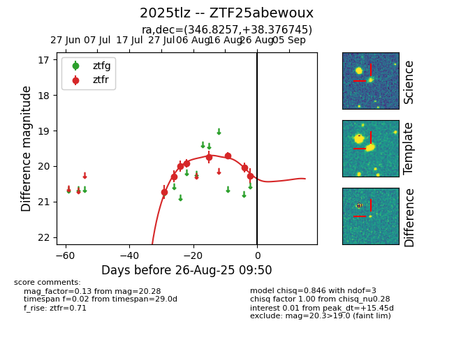

Target 2025tlz at 2025-08-26 10:32, see:
FINK: fink-portal.org/ZTF25abewoux
Lasair: lasair-ztf.lsst.ac.uk/objects/ZTF25abewoux
ALeRCE: alerce.online/object/ZTF25abewoux
TNS: wis-tns.org/object/2025tlz
YSE: ziggy.ucolick.org/yse/transient_detail/2025tlz
alt names
ZTF25abewoux (ztf,fink)
2025tlz (tns,yse)
coordinates:
equatorial (ra, dec) = (346.8257,+38.37674)
galactic (l, b) = (101.4374,-20.10991)
photometry
last atlaso=20.05, ztfr=20.28
3 atlaso, 8 ztfr detections
